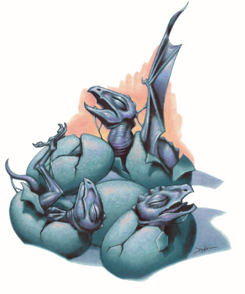
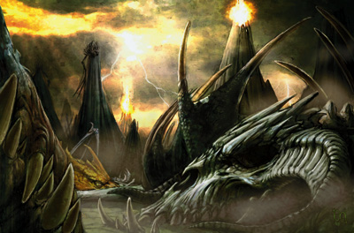

介绍
龙被激怒了，咆哮着，撕扯着空气
喷着火，冲向Dydd. 德鲁伊砍进
ashardalon的心脏， 她的弯刀使龙的
命脉开始溢出。 这时Dydd被杀死了，
她的心脏被咬出了胸膛， 龙把Dydd的心吞下，
用来维持它一度衰退的生命
----Dydd之死
龙的生命周期
==================
"巨龙始于微小的蛋的成长."
-- Kobold proverb
根据他们的适应性,一条龙可以健康的活1200年,或者更久.
除了一些不幸.
无论如何, 所有的龙,
从一个卑微的蛋开始进化到最后要通过12个清晰的阶段.
每个新的进化阶段都体现在龙的 身体 头脑 或者行为上.
蛋

龙蛋大小变化决定于龙的种类。
他们一般和生下他们的龙同样颜色
并且和这种龙免疫同样的元素伤害。
(例如， 黑龙蛋是黑或深灰色的
并且不受酸伤害) 。
龙蛋有一个瘦长的卵状外形
和一个坚硬的石壳。
一条雌龙可以从她的青年期开始产蛋
即使在她的极老年期也能保持繁殖能力。
雄性从青年期开始有能力使卵受精
并且保持繁殖能力直到太古期。
蛋在雌性体内受精，
准备生产所需时间大约是四分之一的孵化期
，如下表所示。
大概数字在表上提供了;
实际周期可能会有10天的偏差。
规则: 龙蛋
虽然它包含一个活的胚胎,还是将龙蛋看作一个无生命体.
龙蛋的生产
龙每年生产一次 一窝有2－5个。
排卵从交配开始，一条雌龙生蛋数量通常较少，
如果她愿意， 可以不交配。
交配和生产可以发生在一年中的任何季节。
多数龙蛋下在雌性窝内的巢里，
在那里母亲或父母能守护和照料它们。
典型的巢由坑或土堆组成，
蛋被完全地埋没在松散的材料里譬如沙子或叶子。
龙蛋的卵形结构给予它强大的抗挤压性，
雌性能够在巢上走动，战斗，或者睡觉
而不用担心打破她的蛋。
龙有时会留下它们的蛋远离保护。
在这些情况下，
雌性会非常重视巢的隐蔽。
她或她的配偶(或它们两个) 也许会定期造访包含
巢的区域，但他们会当心不太接近巢
除非蛋受到某种危险的威胁。
孵化龙蛋
当龙蛋完成孵化， 里面的雏龙必须挣脱蛋的束缚。
如果父母是附近，它们通常会帮助雏龙柔和的在蛋壳上轻轻拍打。
否则， 雏龙必须自己突破蛋壳，
当雏龙开始设法逃脱直到挣脱束缚的这个过程通常要花费不到一至二分钟。
一窝里所有的蛋差不多同时开始出壳。
适当地照看和被孵化的龙蛋几乎有100% 孵化率。
被干扰了的蛋，尤其是那些远离巢穴进行人工孵化的蛋,
会比较不可能产下活的雏龙 。
规则:孵化龙蛋
一旦生产， 龙蛋要在适应于孵化的环境下孵化。
基本的必须条件取决于那一种龙， 如下所述。
雏龙胚胎在龙蛋里面可以生存在不充分的孵化环境下， 但不会太久。
在没有达到孵化条件的环境下，
雏龙每小时必须做体质检定
(DC 15+1 每前一次检定;一个雏龙胚胎拥有和被孵出的雏龙同样体质数值)
决定是否生存。
在孵化期的最后1/4时间
雏龙胚胎在龙蛋里的将变得有意识。
龙蛋孵化环境如下:
黑色: 蛋必需被浸没在强到造成每轮1d4伤害地酸里， 或埋入各种沼泽湿地
蓝色:每天的前一半，蛋必须被处于温度保持在
华氏90度 到华氏120的环境下, 随后的半天在华氏40度到华氏60度环境下 。
黄铜色:蛋必须被放置在明火或至少华式140度的环境下。
青铜色:蛋必须被浸没在大海或大洋或至少每日2次有潮水淹没的地方。
赤铜色:蛋必需被浸入在强到可以造成每轮1d4伤害的酸里，或裹在凉快的沙子或泥土里(华氏40度到华氏60度) 。
金色:蛋必须被放置在明火或至少华式140度的环境下。
绿色:蛋必需被浸没在强到造成每轮1d4伤害地酸里， 或埋入被雨淋过的树叶里。
红色:蛋必须被放置在明火或至少华式140度的环境下。
银色: 蛋必须被埋入雪下，包在冰里，或维持在
华氏0度的环境之下。
白色: 蛋必须被埋入雪下，包在冰里，或维持在
华氏0度的环境之下。
规则:龙蛋的孵出
从蛋里孵出，雏龙必须挣脱壳的束缚。
根据在蛋里的位置，雏龙无法撕裂蛋壳，
并且雏龙爪子的力量并不足以突破壳的硬度。
为了打破壳雏龙必须做DC20的力量检定。
幸运的是它可以在鉴定中取20，打破壳大约要花2分钟
投1d10来确定一窝蛋的孵化日期。
结果如果是奇数，蛋将比规则(见表1-1)早1d10天孵出。
如果是偶数，蛋将比规则迟1d10天孵出。
如果蛋为雏龙父母中至少一个所照顾，它不需要做进一步检定来确定是否生存。
如果孵化环境比理想差，雏龙必须做一个体质检定来确定是否生存。
如下表所提供的的环境清单所挂钩的体质检定dc值
来决定能否在不利条件下生存。
如下情况比如巢受到干扰或蛋从巢中被移走，
生物照顾着蛋时可以作一个医疗检定，如果该生物拥有5级以上的神秘知识将具有＋1加值 。
雏龙可以使用自己的体质检定结果或者医疗检定结果， 取其最高值。
打破一个在孵化期最后1/4以前的蛋会导致雏龙处于死亡的边缘。
如果蛋在孵化期最后1/4期间被打破雏龙可以作一个生存检定 ，如果通过检定将会受到和当前生命值等量的淤伤伤害。
这种伤害无法被治疗直到雏龙通过它的正常孵化期，
并且雏龙在这整个期间很不稳定。
在这期间照料早产的雏龙必须像照顾一个尚未孵化的蛋一样保证其生存。
雏龙(年龄 0-5岁)
通过充分的成长雏龙从的蛋爬出来并准备面对生活。
从它鼻子尖端到它的尾巴末端，大约是2倍蛋的长度
(雏龙的实际尺寸取决于它是那个种类的龙;参见第5章) 。
一条新孵出的龙是难以辨认和湿漉漉的。
在大约一个小时以后，它会准备好飞行，战斗，和思考。
它从它的父母那里继承了如何去正确有效的使用它的身体，
但是这种于生具来的知识常常被埋没在雏龙们的记忆深处，
在需要使用这些知识以前都是被忽略的。
与更老的龙相比，雏龙有一些笨拙。
它的头和脚比较大，
而翼和尾巴相对成年期的龙则是成比例缩小。
雏龙孵出的时候如果父母在场，
雏龙会有一个保护者并且也许会安全快乐的渡过它生命中最初的10年。
如果不是，雏龙要为了生存而奋斗。
不管由其它龙养大或让它们自生自灭，
雏龙们要学习的第一件事就是成为一条龙，这包括觅食，
找一个窝和了解自身的能力(这是通常的顺序) 。
新出生的雏龙会立刻开始寻找食物。
对于那些无人看管的雏龙来说，第一餐往往是他们的蛋壳。
这个习惯不但可以保证给雏龙生命所需的矿物质，
而且可以准备选择攻击同一个巢里的其他雏龙 。
被父母抚养的雏龙通常可以吃到它们喜欢的种类。
例如，赤铜龙提供他们的子孙以巨大的蜈蚣或
蝎子。在许多情况下这顿食物是活的牺牲者 ，
并且雏龙将在它的第一次进食下得到狩猎的训练。
在满足了它们的饥饿之后， 雏龙的下一项任务是
一个安全可靠的窝。 龙会寻找一些隐蔽和
可防御的洞，角落，缝隙，供它休息，藏身
并开始存放财宝。
一条在父母的照顾下的雏龙会在它双亲的窝里找一个区域划分为它自己的领土。
一旦它觉得有了相当的食物来源和安全的窝，
雏龙将会全身心的投入对自身天赋的磨练。
它通常测试自己能作的任何事情。
和它同巢的雏龙扭打 ，寻找危险的生物战斗， 并且化很长时间冥思。
如果父母在场，雏龙会接受如何以一头龙处事的指导，
偶尔伴随父母处理他们每日的活动。
雏龙有时会找更老的同种龙作导师。
在善龙之间，
这样关系是偶然的并且通常会维持10年(按龙的标准来算很短的一个时期) 。
雏龙会周期性的(每月1次 ，或每周一次) 拜访更老的龙寻求忠告与信息。
恶龙，同样，也会给予并非他们后代的龙以忠告，
因为他们懂得一个不朽种族中年青者的重要性 这并非出自利他主义。
无论什么种类的龙都是复杂的，
这样的导师和学徒关系要求更加年轻的龙为导师带来作为礼物的食物，
信息，和财宝。如果更老的龙
曾经把学徒作为对手来看待，这种关系会马上结束;
当和恶龙有关时， 结局对年轻的龙来说往往是致命的。
规则:雏龙的能力
一个新出生的雏龙无法飞行，在敏捷上受到-2惩罚
，并且在攻击检定上受－2惩罚
这些惩罚将在一个小时以后消失。
雏龙的其他能力则和怪物手册上一样 包括技能和专长。
技能和专长的选择类似于他们的父母。
幼年龙 (年龄 6-15岁)
从6岁开始 一条龙已经长到了它雏龙期的2倍长度，
尽管他的头和脚对于身体来说还是过大。它们变得更强壮而且精力充沛。
为了适应巨大的体形龙必需要寻找新的窝来居住。
多数龙都会重新布置他们的地盘，尤其是那些有父母协助的。
(当龙在一个区域狩猎5年后。最初的窝也许已经让外人知道了，
或者周围的牺牲品已经消耗殆尽了)
少年龙(年龄 16-25岁)
从16岁开始， 多数龙开始急速发育直到长成他们成人期大小的体形，
虽然他们头和脚还是和雏龙一样过大。
他们的生活经验使他们变得更聪明并掌握他们的天赋。
在这个阶段，龙开始强烈感觉到收敛财宝和建立领地的欲望
(尽管它们也许能很好的同时进行) 。
在某种情况下，
一条少年龙仍然会继续和它们同巢的龙或是父母分享窝和领地。
当龙长到少年期它们会离开窝，
它们通常远离出生地寻找可以自己打理家务的地点。
青少年龙(年龄 26-50岁)
26岁开始 ，龙可以轻松的走过直到成人期的路。
它的力量远不及一个成人期的龙，但是它有一个成年龙的身体比例。
某些种类的龙在这个阶段会第一次施展他们的魔法能力。
青年龙(年龄 51-100岁)
在经过半个世纪的时间后，龙进入成人期。
(尽管它们的身体继续生长许多年) 。
它们准备寻找配偶，并且大多数龙都会及时这么作。
在这个年纪，龙的鳞片变成了一种强大的装甲,
除了魔法武器和其他龙的爪和牙齿它们不惧怕任何攻击。
一条青年龙掌握了它的第一个法术并显示了它可怕的智力。
一条青年龙将会切断它们和导师 父母 以及巢中其他龙的联系，
(如果它还没这样做)和建立自己的窝与领地。
成年龙(年龄 101-200岁)
在它生命中的第二个世纪期间，
龙的发育速度开始变慢，
但它的身体状况已经是一流的了。
随着它们最初的快速发育的结束，
龙的身体变得前所未有的强大和健康。
成年龙继续磨练着它们的精神力量，
并且掌握更多技巧和魔力。
在它生命中的这个阶段， 龙多数会找一个长期配偶
并和它以及后代分享自己的窝。
壮年龙(年龄 201-400岁)
当龙走过二个世纪的时间，它们的威力在物质和精神继续上升高，
通常它们的身体会有一些明显的变化。
在它们生命的这个阶段，一条龙真实的力量和人们所料想的一样，
并且它自己知道这一点。
壮年期的龙会呈现出一种自信，这是更年青的龙所缺乏的。壮年期的龙很少用危险来证明自己(反对，质疑，反抗其它龙) 。取而代之的是，它们有目且充满信心的行动，通常要通过几年的计划来使之完美。
由于壮年龙的力量，财富，和年龄，
它很极少在这个巨大的世界里不被人注意。
它们名声远播，至少在其它龙当中，
并且这经常使它们成为同类竞争者或冒险者的目标。
作为一头壮年龙来说第一件事就是对巢穴的检查和增强它的防御能力。
通常，龙会谨慎小心的重新布置相关事务。
龙永远不会仓促的选择它们的新窝，
并且如何安排保护更多的财宝经常在它们的计划之中。
诗人口中关于龙抢夺财宝,摧毁王国是有它真实根据的，
比如这会发生在一条壮年龙正在搬家的时候。
老龙(年龄 401-600岁)
当多数龙到达这年龄的时候，它们的身体停止了生长，
虽然它们变得更加强壮，
而它们的头脑和魔法力量在将来的几个世纪里会不断增强。
老年龙开始呈现出一些老化的迹象;
它们的鳞片变得破碎而有裂痕,并且颜色变得黯淡而失去光泽
(虽然一些金属龙实际上有一个光鲜的外表) ，
它们的虹膜开始退色，所以它们的眼睛看起来好像毫无特色的水晶球。
多数老年龙继续磨练着它们狡猾的耐心,
这早已从壮年期开始了。
虽然,龙会迅速保护它们认为私有的东西，但它们很少为了任何事草率行动，
取而代之的是在行动之前考虑到可能发生的任何情况。
极老龙(年龄 601-800岁)
当龙走过6个世纪的时间，它们对物理攻击的抵抗力变得更强。
它开始掌握强力的法术和魔法能力。对于雌龙来说，
生命中的这个时期是它们最后一次繁殖的后代的机会,
并且多数雌性在它们失去生殖能力之前会尝试最少生2窝蛋。
古龙(年龄801-1,000岁)
在这个时期，雌龙到达了它们繁殖年龄的尽头。
作为补偿,多数雌龙象雄性那样开始指导更年青的龙。
古龙对还没到成年期的年青龙有一些担心，
且它们的智慧的和经验对于那些龙来说是非常有益的。
多数龙在这个时期拥有一个和最聪明的人类相提并论的头脑，
它们就好像一个巨大的知识宝库，无论是实践的经验还是神秘知识。
上古龙(年龄 1,001-1,200岁)
超过一千年的生命是一个伟大的成就，就算对于龙来说
，而生命中的这个阶段对龙来说是一个里程碑。
就算是竞争对手的龙,一条上古老至少会赢得表面上的尊敬。
雄龙在这个阶段下到达他们的繁殖年龄的尽头，
但它们的崇高地位保证了它们的配偶。
更年青的雌龙通常会在雄性上古龙的邻近地区建立领土，
为了交配,寻求保护，并使它的后代可以轻松的获得上古龙的指导。
太古龙 (年龄1,201岁以上)
当龙走过十二个世纪，它们的精神和身体发展到了最终形态，
它们的身体,精神以及魔法力量到达了顶点。
规则：饲养一条龙
作为一个龙的养父母不是件简单的任务。即使善良阵营的龙也有高傲的性格和天生对自由的向往。许多龙本能的尊重年长的同种龙，不过他们往往用轻蔑的态度看待其他生物。
年长和聪明的龙最终学会尊重非龙类，因为他们的能力和成就，不过一条刚孵化的稚龙往往把非龙的养父母看作一个捕捉者——或者起码一个善意的傻瓜。经管如此，一个非龙的人物还是可能和一个刚孵化的稚龙产生友谊。用交涉或威吓甚至（最终）驯养动物技能来达成这个要求。
一个人物找到一个刚孵化的稚龙必须开始一个交涉或威吓鉴定来说服龙接受这个人物领导；5或者更多的知识（神秘）提供人物这个鉴定+2的奖励。人物的交涉或威吓对抗龙的察言观色鉴定。龙在这次鉴定上拥有+15的种族奖励。当然其他环境，比如下面表格里提级的这个，能帮助调整稚龙的察言观色鉴定。
情况 调整
人物在孵蛋时候照顾龙蛋 -2
龙孵出时候人物在场 -5
龙的阵营的每个构成和人物相同1 -5
1 阵营构成是混乱，邪恶，善良，守序和中立。
这个对抗鉴定由DM秘密投掷，所以这个人物的玩家不会立刻知道鉴定结果。
如果稚龙在这次对抗鉴定上获胜，
那么它会将人物视为捕捉者并试图用任何他所会的方法取得他的自由。
（许多龙，即使是刚孵化的稚龙，也足够聪明去放弃攻击一个更强大生物，
并会等待适当的时机逃脱）这个人物试图饲养这个龙的企图绝不会成功。
这次对抗鉴定不能重掷。
如果角色赢得了这次对抗鉴定，和或她能常识去饲养龙。这个过程花费5年，
不过一旦饲养周期开始，人物需要每周花一天来进行龙的训练。
贯穿整个饲养周期，然而，龙必须被喂食和提供住处，这花费10gp每天。
当饲养周期完成之后，人物需尝试一次驯养动物鉴定
（DC20+龙在幼年时的生命骰）。只进行一次鉴定，由DM秘密投掷。
一次失败的鉴定不能重掷。如果人物的驯养动物失败了，
龙就不被成功饲养并寻求离开，像刚才所说的一样。如果鉴定成功了，
人物就能开始训练龙来执行任务
（最长见的就是作为坐骑来服务；查看龙作为坐骑，136页，
和驯养动物技能，玩家手册74页）。
对许多人来说，饲养龙的最终目标是使它成为部属来为角色所用。
为这个理由饲养龙的，人物必须有领导力特技
（查看城主手册106页）在饲养周期期满之前，
并必须有一个足够高的领导力值才能吸引龙在那时成为部属
（使用龙在幼年时的HD作为部署等级）。
同样的，龙的阵营必须不能和人物的阵营在善良和邪恶或守序和混乱上对立
（比如，一个守序善良的人物不能常识饲养一个一个混乱邪恶的稚龙）。
想了解更多信息，请查看龙作为部署，138页。
衰退与死亡
对于太古期的龙究竟可以活多久有一些争论(有些学者认为龙是永生的) 。
不幸地是，在这个问题上龙本身一点帮助也没有。
他们没有出生记录和并且喜欢夸大它们的年龄。
半精灵贤者Guillaume和Cirjon de Cheirdon 对龙的年龄作了一个严谨的算法,
源自对某些著名(和臭名昭著的) 龙到达了他们的太古期时开始的追踪调查。
后来,一些学者怀疑, 那个Guillaume所宣布的猜想实际上并非是真实的笔记。
无论如何，他们最终消失了，并且没人知道他们最后的休眠地。
或许他们死于龙的攻击，又或许他们还和我们在一起,以其他的形式。
Guillaume 和cirjon已经确定了活的最短的是白龙，
可以活2,100 年。活的最久的真实例子是金龙;
Guillaume 和cirjon 提出了金老最多大约可以活4,400 年。
另外，贤者发现, 龙可以在某种程度上延长它们的寿命,
进入一个称之为"衰退期"的阶段。那个阶段，
是Guillaume 和cirjon所杜撰，表示龙生命中的最后一个阶段。
龙的生长停止于太古期,这也预兆着死亡的到来
(对于说有生物来说生长是贯穿一生的)。
龙可以在到达太古期之后活几个世纪，
但它处于濒死的的状态，并永远无法躲避死亡。
衰退期出现在龙的生命最后阶段,
迫使龙的生理状况进入一个螺旋状的恶化。
龙的衰退期也许会维持几年,但是通常第一次衰退期的来临就会导致死亡。
AVOIDING THE TWILGHT
Many dragons prefer to avoid a show descent into death and
leave the mortal coil with their dignity intact.Many great
wyrms seem to just disappear at the ends of their lives.
No one knows exactly where they go, but scholars have
identified at least three possibilities: departure,
guardian-ship,and dracolichdom.
避开衰退期
大多数龙宁愿逃避渐渐步入死亡这个现实,
它们远离人群仅仅为了保持它们不曾被破坏的尊严。
多数太古龙看起来只是消失在它们生命的最后阶段.
没有人确切的知道它们将如何对待死亡，
但学者确定了至少三种可能性:死亡，
变成一个守护者，还有龙巫妖。
规则:避开衰退期
任何老年或者更老的龙都可能死去,成为一个守护,或是一个龙巫妖
(关于龙巫妖的详细资料可以在146页找到.)
死亡或成为一个守护者,
龙必须销毁最少价值135,000gp的财宝,或者至少它90%的宝藏.
前提是一条龙所拥有的财宝价值超过150,000gp.
所有的财富必须在同一天内销毁,
而且至少价值120,000gp的财宝最少在龙的宝藏内存放了200年以上.
销毁了必需数量的财宝之后,
龙必须要找一个龙之墓地或是适当的地方来守护.
一旦它到了墓地或者守护地,
这一切将会很快开始.
当一条龙死亡,他的肉体失去了生命的气息.
当龙成为一个守护者,他的肉体于环境合为一体.
一旦它摧毁了财宝,龙可以延迟死亡或成为守护者的时间,
每一点魅力可以延迟一天.
如果龙超过了时间限制,这个机会就失去了,
龙不能再次尝试死亡,
直到它有一次销毁了所需数量的财宝为止.
死亡
一条龙可以简单的希望他的灵魂离开身体。
这样做的时候，龙会死去，它的灵魂从此得到了解脱。
龙会摧毁它所有的财宝来为了死去而准备。
多数龙也会去一个龙的墓地等待死亡。

龙之墓地是一个古老的地方,甚至龙都不记得它的起源。
通常，只有会飞的生物才能到达这里，
位于山顶，藏于山谷(由丛林，沙漠 , 或山脉所环绕) ，
坐落于风平浪静或惊涛骇浪的海上的岛中，
或是大地上巨大裂隙的深处.
在墓地里面，充满着危险。元素能量风暴经常洗劫龙之墓地
，元素旋涡常常随机出现在某个地方。
这些糟糕的风暴和漩涡可能会向外喷出成群有敌意的元素生物,
或是把某个没有注意到漩涡存在的傻鸟吸入一个元素位面。
龙死后的身体或整具骷髅会自发活动和在周围行走，
攻击它所遇到的任何活物。
龙之墓地也有龙的阴魂在闹鬼。
尽管危险，龙之墓地对来访者仍然充满诱惑。
据传说，还有一些著名的发现，
不是所有死去龙隐藏的财宝都会被销毁.
很多财宝猎人(和龙一样贪婪)疯狂的寻找龙的巢穴为了能拥有那些财宝。
其他造访者则是为了魔法或炼金术找寻龙的残骸。
规则: 龙之墓地
一个龙之墓地到处都是硬化的龙骨以及新鲜的龙的尸骸,
这片被诅咒的大地呈现出一种毛骨悚然的样子.
每个龙之墓地至少有一个阴魂龙守卫者,
它们保护着这块地方.
墓地守护者十分像一只太古龙的鬼魂形态(见161页),
通常是一条金龙或者其他守序阵营的龙.
守护者的唯一的任务就是保护墓地,
并非收集失去的宝藏.
守护者不会为了保护它们的财富而休息.
如果它们在战斗中被打败了,守护者将会在1天内重组.
其他的阴魂龙也可能出现.那里其他的灵魂知识普通的阴魂龙.
超自然的危险充斥于龙之墓地.
周期性的元素能量风暴席卷着整个区域.
那些风暴相当于lv20的施法者所释放的火焰风暴
(通过反射DC23只会受到一半伤害),
除非它们可以忍受酸,寒冷,电击,火焰,这些充斥着整个墓地.
这些能量伤害每1D4小时一次,但是频率常常有很大变化.
龙之墓地也可以是宇宙中的一个半位面.
这个不稳定的区域可以是5ft-50ft大小的任何地方.
每1D4小时,这样一个区域会出现成群的元素生物
(视为lv20施法者所释放的元素召唤法术)
或是被一个漩涡拉入元素位面.
漩涡会停留1D4分钟.
在这期间生物接触或进入这个不稳定的区域会被扔进元素位面.
其弱点是总是拥有咒法系的灵气(一旦灵气开始作用就无法阻挡)
一个龙之墓地的骷髅龙以及僵尸龙(见192和197页)数量不断在变化
这些东西之所以可以活动 是因为墓地里的超自然力量.
这些生物会攻击任何它们遇到的活物,除了前来墓地等死的龙.
传说中龙之墓地的财宝是真实的.
一个龙之墓地的典型构造
是3倍于标准的财宝来对应守护者的挑战等级.
虽然阴魂龙通常没有任何财宝,
但是龙之墓地里面零散的堆积着那些死去的龙留下的财宝
以及那些在挑战中失败的掠夺者的装备.
守护者
在龙的正常生命结束后,
一条龙可以被选出作为守护者,
它逐渐变成地形的一部分.
当龙毁坏了它的财富后, 它会变成一种地形:
一般来说多数龙的选择是小山, 山脉, 湖, 炤泽, 和小树林这一类.
这样的地区成了最受产蛋的龙喜爱的地方。
据说这样窝里的蛋,从来没被骚扰过。
雏龙居住在这样的地方,于守护者的灵魂交谈
,从它那里接受成为一只强壮的成年龙所需的知识.
就好像龙之墓地，
传说中龙的财富就隐藏在这样的地点,地形的特征就像宝藏猎人的目标。
从中获得财富(如果那些财富存在的话)是很困难的。
居住在那里的更年青的龙会很愤怒
(如我们所见,龙会监视未被照料的巢穴周围 ) 。
这些地方同时也会吸引阴魂龙，
对于入侵者来说,这又增添了一个危险的因素。
规则 守护之地
当一条龙成为一个守护者,它在一个区域制造一种地理环境
这个行为要消耗龙本身所拥有的体质点数,
大约每平方英里5点体质.
环境的创造在一些细微的风俗习惯上常常很一条龙很相似.
一个山丘的背面可能会让人联想到一条正在睡觉的龙,
举个例子,或一个湖泊有龙的头或是脚印的形状.
如果雌龙和后代于守护者的种类相同,
那么她在守护之地产下的蛋如同受到
无法侦测和海市蜃楼奥术的隐藏效果一般.
两种效果会持续直到蛋的孵出,没有哪一种效果拥有魔法灵气,
但是其他方面的功能如同20级施法者所释放的法术一样.
只要是和守护者同种类的龙,
当它们在青年期或是更年轻时
可以每月造访一次守护之地来获得类似通神术效果的益处.
更老的同种类龙也可以获得同样的收益,但是只能一年一次,
守护之地的中心实际上会包含一小部分财宝,
这些财宝是守护者转化后留下的.(隐藏在守护之地的中心附近)
这种财宝只包括硬币和工具,
其宝物为一倍标准于守护者转化时挑战等级的1/4.
移动这些财宝并不会给守护之地带来任何伤害,
但是多数龙对此持怀疑态度.
龙巫妖
一些邪恶龙类通过他人的帮助来逃避死亡.
这些龙和它们的仆人创造出一种被称为护命匣的无生命物体,
用来保护龙的生命能量.
下一步,是一种为了让龙肉体毁灭的特殊调制剂.
这种致命的毒药会杀死那些准备好一切的龙.
在龙死亡之后.它的灵魂会转移到护命匣中.
护命匣中的灵魂可以占据任何靠近的尸体,包括它自己先前的尸体.
当现在的身体被毁灭时,龙巫妖的灵魂会回到护命匣中,
从而占据一个新的身体.
关于龙巫妖和其创造过程的详细资料,见146页.
点击右下角的菜单选择其他部分 |